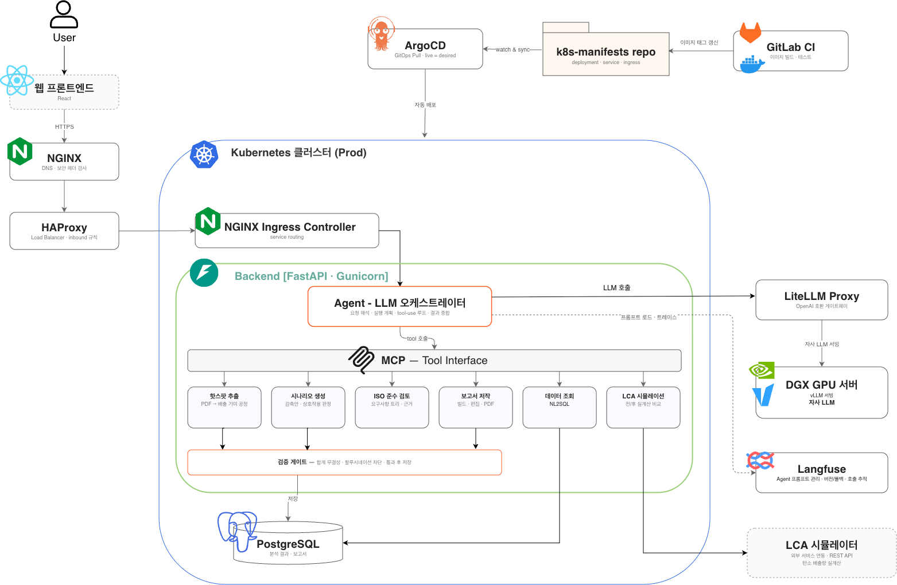

1특허 출원 — 제1발명자
11LLM 도구 — 대화형 에이전트 오케스트레이션
3ISO 표준 자동 검토
0클라우드↔온프렘 전환 코드 변경
S배경 — 전문가의 수작업에 갇힌 LCA
EU CBAM(탄소국경조정제도) 등 글로벌 탄소규제가 본격화되면서, 제조기업은 제품 단위의 탄소발자국을 실측 데이터로 산정·보고·검증(MRV)해야 하는 상황이 됐습니다. 그런데 제품 하나의 탄소발자국을 산정하려면 수십~수백 페이지의 LCA 보고서를 읽고, 배출 기여가 큰 공정을 찾고, 감축 시나리오를 세우고, ISO 14040/14044/14067 요구사항에 맞는지 검토해야 합니다. 전 과정이 소수 전문가의 수작업이라 느리고, 비싸고, 사람마다 결과가 다릅니다. 이 전문가의 분석·검토 과정을 AI 에이전트로 자동화하는 것 — 보고서를 읽고, 핫스팟을 찾고, 시나리오를 검증하고, 표준 준수까지 검토하는 — 이 과제의 목표입니다.
T역할 — 백엔드와 AI 파이프라인 전담
담당백엔드 · AI 파이프라인 설계/구현
협업별도 웹 프론트엔드 팀과 API 계약
기간2025.05 — 진행 중
특허출원 10-2026-0139153 (제1발명자)
A설계와 구현

01LCA 개선 시나리오 AI
- LCA 보고서 PDF를 업로드하면 탄소 배출 기여도가 큰 공정(핫스팟)을 자동 추출하는 파이프라인 구현
- 추출된 핫스팟을 근거로 LLM이 감축 개선 시나리오를 생성 — Structured Output으로 스키마를 강제해 후속 단계에서 바로 소비 가능한 형태로 반환
- 비정형 PDF의 표·수치 파싱 오류에 대비한 단계별 검증과 예외 처리로 파이프라인 신뢰성 확보
- 생성된 시나리오를 외부 LCA 시뮬레이터와 연동해 적용 전/후 배출량을 동일 평가법(GWP100)으로 정량 비교 — 시나리오가 "그럴듯한 제안"이 아니라 수치로 검증된 감축안이 되도록
02ISO 표준 준수 검토 에이전트
- 생성된 시나리오와 보고서를 ISO 14040 / 14044 / 14067 요구사항에 대조해 준수 여부를 검토하는 에이전트 설계·구현
- ISO 원문 3종을 판독해 검증 가능한 요구사항 트리(약 115개 노드, shall/should 층위·조건부 발동)를 컴파일 타임에 구축 — 표준 원문을 런타임 컨텍스트에 넣지 않음
- 트리 순회·적용성 게이트·판정 검증은 코드가 소유하고, LLM의 재량은 "보고서 어디에 근거가 있는가"의 탐색 하나로 좁힘 — 프롬프트로 부탁하는 규칙은 어겨지지만 기계 검증은 못 어기므로
03LCA 보고서 자동 저작
분석 결과·원문 → 섹션 구조 요약 재구성 → 문서 빌드·부분 편집 → PDF 렌더링
- 분석 결과와 원문을 고정 섹션 구조의 보고서로 자동 재구성하고, 빌드 후에도 섹션 단위 편집 API로 수정 가능한 문서 파이프라인 구현 — 최종 산출물은 PDF로 렌더링
- 특허 「탄소감축 시나리오 간 상호작용 자동 판정 및 표준 동등성 검증을 이용한 전과정평가 보고서 자동 저작」의 핵심 아이디어가 그대로 구현된 모듈
04대화형 분석 에이전트
- PDF를 올리고 자연어로 대화하면 11개 도구(핫스팟 분석·시나리오 생성·준수 검토·LCA 시뮬레이션·대체 검증·공급망 그래프·데이터 조회(NL2SQL)·보고서 읽기/편집 등)를 LLM이 스스로 선택·호출하는 tool-use 에이전트 구현
- 한 질문에 여러 도구를 연쇄 호출하는 멀티라운드 루프(왕복 상한 제어)와 진행 상황 스트리밍으로 긴 분석도 대화 흐름 안에서 처리
05LLM 서빙 인프라
- LiteLLM 프록시(OpenAI 호환)로 LLM 벤더를 추상화 — 클라우드 API와 온프레미스 모델을 코드 변경 없이 전환
- 보안 요건이 있는 고객 환경을 위해 온프레미스 GPU 서버에 vLLM으로 오픈소스 모델을 서빙하고, 전체 API를 실제 LCA 보고서로 회귀 검증
!부딪힌 문제들 — 그리고 어떻게 뚫었나
- 온프레미스 모델로 바꾸자 장문 API가 전부 죽었다. 원인은 코드에 하드코딩된 LLM 타임아웃(120~180초) — 3.8 tok/s 하드웨어에서 7~15분 걸리는 장문 생성이 전부 잘려나감. 타임아웃을 설정값으로 분리해 환경별 조정이 가능하게 수정
- 모델을 바꾸니 숨어 있던 프롬프트 버그가 드러났다. 메타데이터 추출 프롬프트에 필수 필드명이 빠져 있었는데, 기존 상위 모델이 검증 에러 메시지에서 필드명을 역추론해 만회하면서 버그를 가려주고 있었음. 모델 교체가 프롬프트 품질 점검이 된 사례 — 이후 출력 스키마를 프롬프트에 명시하는 것을 원칙화
- LLM의 수치는 믿지 않는다. 핫스팟 추출 합계는 보고서 명시 총량과 자동 대조(실측 0.03% 오차 통과), 시나리오 감축량은 외부 시뮬레이터 실계산과 산술 대조, 대응 불가 질의에는 수치 창작을 차단. 이 판정을 전부 코드가 소유하게 설계했고 — 모델을 통째로 바꿔도 신뢰성 장치가 그대로 작동함을 실측으로 확인
R결과
- 특허 출원 — 「탄소감축 시나리오 간 상호작용 자동 판정 및 표준 동등성 검증을 이용한 전과정평가 보고서 자동 저작을 위한 장치」 (10-2026-0139153, 제1발명자)
- 핫스팟 추출 결과가 실제 제품 보고서의 명시 총량과 0.03% 오차로 일치 — 검증 게이트를 실보고서로 통과
- 생성된 감축 시나리오 전 건을 외부 시뮬레이터 실계산으로 검증 — 감축량이 산술적으로 일치, 창작 수치 0건
- 에이전트 효율을 동일 실보고서·동일 질문 기준 전/후 실측으로 개선: 보고서 문서 생성을 목차 분할 병렬 sub-agent로 재설계해 응답 시간 69% 단축(437초→134초), 시나리오 반영 시 영향받는 섹션만 갱신하는 전파 구조로 전체 재생성 대비 입력 토큰 96% 절감(21,300→952)·응답 74% 단축
- 멀티턴 대화의 지난 턴 도구 결과를 상한 압축하고 보고서를 키워드 매칭 부분 조회로 바꿔 에이전트 루프 입력 토큰 48% 절감. 라운드당 고정비를 프로브로 분해해 "목차 왕복 추가"안이 오히려 토큰을 12% 늘리는 것을 실측으로 기각하고 재설계한 결과
W기술 선정 이유
FastAPI + SQLModel비동기 LLM 호출과 타입 안전한 스키마를 한 번에 — Pydantic 모델을 API 계약과 DB 모델에 공유
LiteLLM Proxy고객사마다 다른 LLM 요구(클라우드/폐쇄망)를 코드가 아닌 설정으로 흡수하기 위한 벤더 추상화 계층
vLLM온프레미스 GPU에서 오픈소스 모델을 OpenAI 호환 API로 서빙 — LiteLLM 뒤에 그대로 꽂히는 조합
pytest + GitLab CILLM 파이프라인 회귀를 실보고서 기반 E2E 테스트로 잡는 안전망
+회고 — 다시 한다면
- PDF 파싱 실패 케이스를 그때그때 고치는 대신, 실패 사례를 평가셋으로 축적해 파서 개선을 정량화했을 것
- ISO 요구사항 트리의 커버리지(전체 요구사항 대비 검증 가능 항목 비율)를 지표로 관리해 검토 신뢰도를 수치로 말할 수 있게 했을 것
* 국가 R&D 과제 수행 중인 사내 프로젝트로 코드·데모는 비공개입니다.